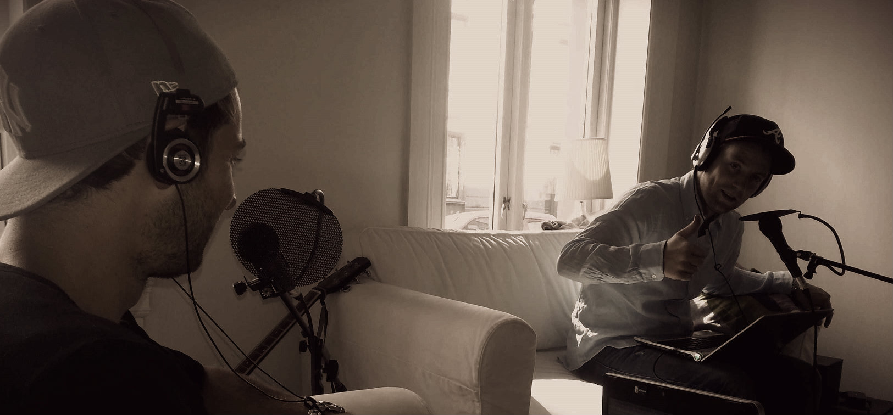

Blanke ark og Web 2.0
Publisert 1 September 2013 av Snus og kaffe
I tråd med med våre nye kjerneverdier lanserer vi en ny webside. Vi satser på på holde denne oppdatert med ferske epsioder.
OM SNUS OG KAFFE
Snus og kaffe er podcast laget av en gjeng glade amatører. Vi fyller sendingene med det som interesserer oss: spill, film og alt som beveger innenfor popkulturen. På denne siden vil vi legge ut episodene fortløpende og vil også blogge om stort og smått.
Har du innspill, ros eller ris, kontakt oss på snusogkaffe@gmail.com